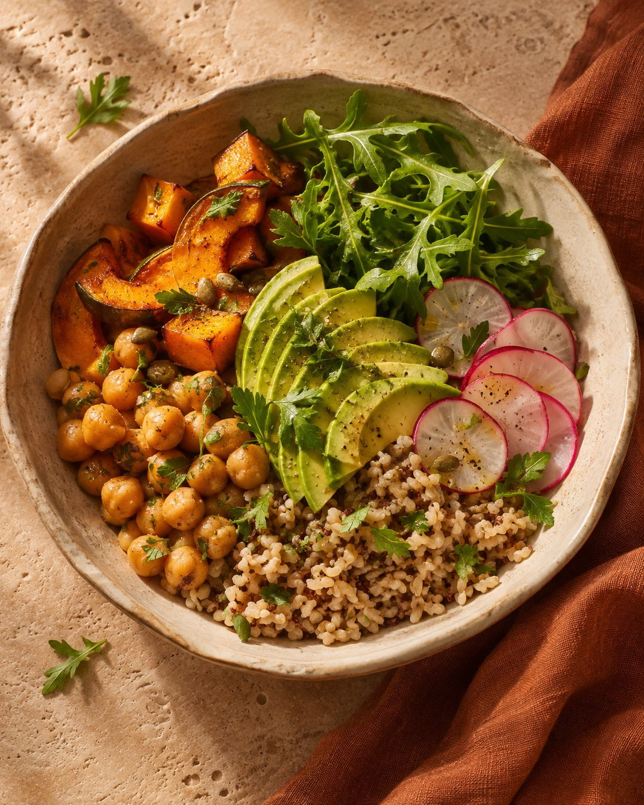

Tratamento nutricional em patologias
Orientação alimentar que considera seu diagnóstico e suas necessidades nutricionais.
Cuidado nutricional individualizado
Acompanhamento nutricional que leva em conta sua saúde, suas preferências e os desafios do seu dia a dia.

Atendimentos
Conheça as opções de atendimento, do cuidado nutricional em condições de saúde à construção de novos hábitos alimentares.
Orientação alimentar que considera seu diagnóstico e suas necessidades nutricionais.
Consultas para tirar dúvidas, acompanhar seu progresso e ajustar as orientações ao longo do tempo.
Estratégias práticas para fazer escolhas e criar hábitos alimentares que você consiga manter.
Acompanhamento para quem deseja perder peso, com metas ajustadas à sua saúde e à sua rotina.
Planejamento das refeições de acordo com suas preferências, seus horários e seus objetivos.
Atendimento nutricional à distância, com agendamento pelo WhatsApp.

Sobre Paola
Sou nutricionista clínica e ofereço um atendimento individualizado, pautado na escuta, no acolhimento e no respeito às suas necessidades. Durante a consulta, buscamos compreender seus hábitos alimentares, seu histórico de saúde e seus objetivos, para que possamos construir, juntos, orientações nutricionais que se adaptem à sua rotina e promovam saúde, equilíbrio e bem-estar.
CRN 24102943Agendamento
Envie uma mensagem para tirar dúvidas, saber os horários disponíveis e agendar sua consulta.